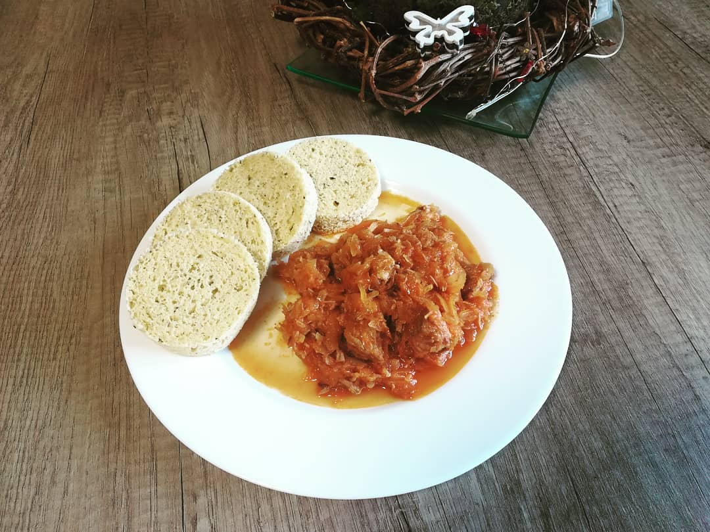

Segedínsky guláš podľa @slon550 — Normy Jedál
Vždy se musím smát, když mě někdo lituje, že jsem na nízkosacharidové stravě... 😁
Včerejší Segedínský guláš z pomalého hrnce a k tomu jak jinak LC knedlík...
2 vejce, 2 lžíce mandlové mouky, 1lžíce Psylia (nemusí být), lžička povoleného másla, špetka soli, lžička prdopeče z vinného kamene a na ozvláštnění špetička koření. Rozkvedlat ve větším hrnku a šup s tím na 3min. do paprsků smrti. (mikrovlnky)
PS: Jó nízko sacharidová strava, to je řehole... 😉 😁 🤣
#lowcarb #intermittentfasting #cukrfree #bezcukruamouky #opavdovejidlo #pomalyhrnec #segedinskygulas #lcknedlik #milujulowcarb #bezcukru #crockpot